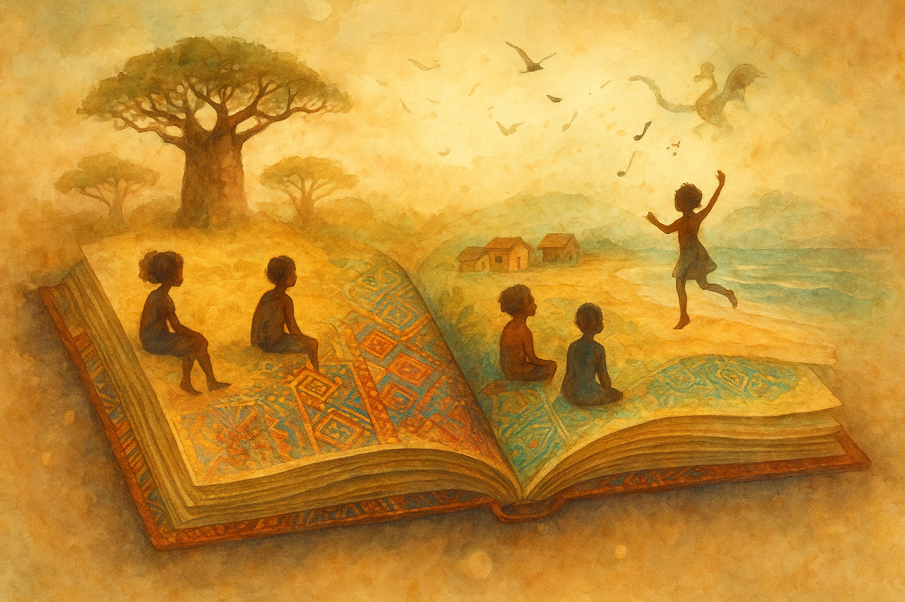

Literatura Infantil e Juvenil Africana de Língua Portuguesa
A literatura infantil e juvenil produzida nos países africanos de língua oficial portuguesa (os chamados membros da Comunidade dos Países de Língua Portuguesa — CPLP: Angola, Moçambique, Guiné-Bissau, Cabo Verde e São Tomé e Príncipe) e também da diáspora lusófona assume um papel educativo, cultural e identitário que vai além da simples ficção para crianças e adolescentes. Ela permite o reconhecimento de culturas, linguagens, memórias e realidades diversas, muitas vezes pouco visibilizadas nos sistemas escolares brasileiros ou portugueses.
Para a educação básica, essa produção oferece uma via de acesso à literatura que:
- Amplia horizontes de leitura para além do cânone ocidental-europeu;
- Reforça a conexão entre a língua portuguesa e contextos diversos de fala lusófona;
- Contribui para a formação de leitores conscientes da pluralidade cultural e da identidade.
Neste conteúdo, exploramos o panorama dessa literatura, seus principais traços temáticos e linguísticos, alguns autores representativos e sua importância para o ensino básico.
Panorama da Produção Infantojuvenil Africana Lusófona
A literatura infantil e juvenil nos países africanos de língua portuguesa ainda é um campo em consolidação, mas com crescente visibilidade e importância. Em Angola, por exemplo, após a independência (1975), políticas públicas incentivaram a publicação de livros para crianças pela União dos Escritores Angolanos e pelo Instituto Nacional do Livro e do Disco. Em Moçambique, a Associação dos Escritores Moçambicanos (AEMO) teve papel semelhante. Nos últimos anos, nota-se o aumento de obras que tratam de identidade, memória, pertencimento e diversidade cultural.
Principais Traços, Temas e Linguagens
A literatura infantil e juvenil africana em língua portuguesa apresenta características próprias, que a tornam uma expressão singular dentro do universo das literaturas lusófonas.
Temáticas de Identidade, Ancestralidade e Pertencimento
Muitas obras exploram o pertencimento cultural, a ancestralidade e os valores comunitários, resgatando contos, mitos e tradições orais reescritos para o público jovem. Essa dimensão reforça a valorização das raízes e da herança africana nas novas gerações.
Linguagem Híbrida e Mistura de Línguas
É comum a mistura do português com línguas africanas, crioulos e expressões regionais. Essa hibridez confere autenticidade à voz narrativa e aproxima o leitor do contexto local, mostrando que o português africano é vivo e dinâmico.
Personagens Infantis, Cotidianidade e Contexto Local
As narrativas costumam retratar o cotidiano de crianças e adolescentes africanos — suas famílias, escolas, brincadeiras e desafios —, apresentando realidades diversas e dando visibilidade a “outras infâncias” e formas de viver.
Temas de Transformação Social e Memória
Muitas obras dialogam com o passado colonial e com os processos de independência, discutindo as transformações sociais e os novos papéis das juventudes africanas.
Ilustração, Fábula e Tradição Oral
A literatura infantil aposta em narrativas lúdicas e visuais, ricas em cores, metáforas e símbolos culturais. São frequentes as adaptações de contos tradicionais, fábulas com animais simbólicos e histórias ligadas à natureza.
Exemplos de Autores e Obras
- Angola: Gabriela Antunes (1937–2004), autora de Estórias Velhas, Roupa Nova; e Cremilda de Lima, pioneira na literatura infantil e juvenil angolana.
- Moçambique: Obras que apresentam infâncias e juventudes em contextos pós-coloniais, abordando memória e modernização.
- Cabo Verde, Guiné-Bissau e São Tomé e Príncipe: Produções literárias que destacam oralidades locais, o uso criativo do português e a valorização das culturas regionais.
- Obra coletiva: A África Recontada para Crianças reúne histórias de diversos países africanos lusófonos com humor e elementos da tradição oral.
Importância para a Educação Básica
A literatura infantil e juvenil africana de língua portuguesa é um instrumento pedagógico e cultural de grande valor para o ensino básico, pois:
- Amplia o repertório literário dos estudantes, aproximando-os de outras culturas lusófonas;
- Contribui para o reconhecimento da diversidade cultural e racial;
- Integra-se a conteúdos interdisciplinares, como História e Geografia;
- Estimula o prazer pela leitura e a formação de leitores críticos;
- Ajuda a combater a invisibilidade de produções africanas na educação.
Desafios e Perspectivas
Apesar da relevância, há desafios como a falta de distribuição ampla dessas obras, a escassez de traduções e edições brasileiras, e a necessidade de formação docente voltada à leitura das literaturas africanas. Contudo, o interesse crescente e a ampliação das publicações indicam um futuro promissor.
Conclusão
A literatura infantil e juvenil africana de língua portuguesa constitui um patrimônio cultural e linguístico de grande valor. Ao ser inserida no contexto escolar, contribui para formar leitores sensíveis, críticos e conscientes da diversidade. Valorizar essas produções é reconhecer as múltiplas vozes que compõem o universo lusófono e ampliar a compreensão sobre o papel da literatura na formação humana.